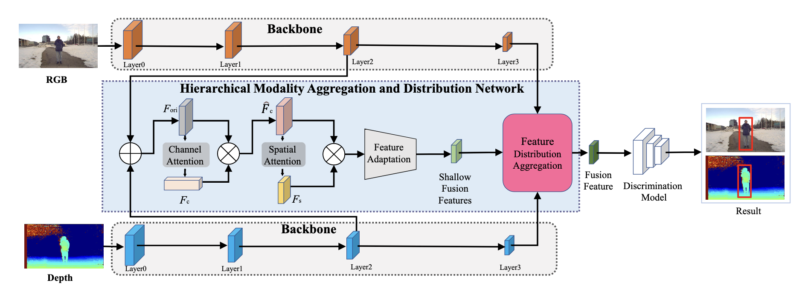
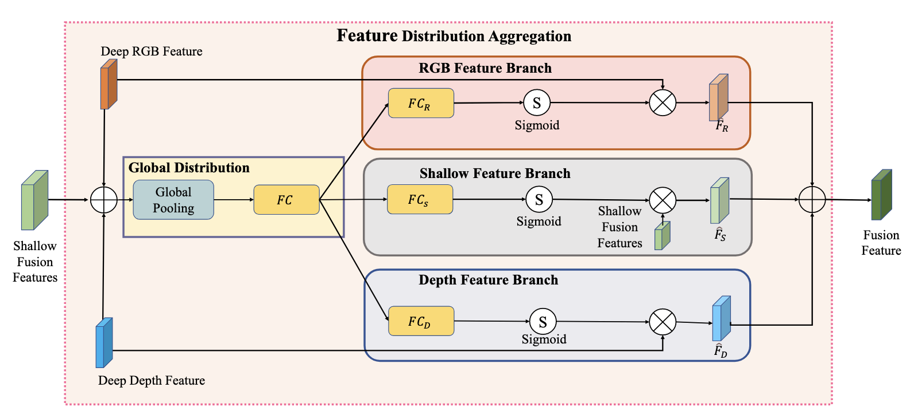

<div class="middle center"> <div style="width: 100%"> # 基于分层模态聚合和分布网络的RGB-D跟踪 [王倓](https://github.com/Mandorian) 2025.10.26 </div> </div> <!--s--> ## 研究背景与动机 RGB-D追踪是一种多模态物体追踪技术，它结合了RGB和深度数据。RGB可提供颜色和纹理等视觉细节，但仅限于2D维度。深度信息可提供摄像头到物体之间的距离，从而实现精确的三维物体定位。这种组合被广泛应用于突出检测、物体检测和跟踪等任务中。\ 双模态特征的集成在推进RGB-D跟踪方面发挥了关键作用，然而，目前的跟踪器只关注单级特征，导致融合的鲁棒性较弱，速度慢，无法满足实际应用的需求。\ \ 提出了两个问题： > 1. 日益复杂的融合方法能否满足RGB-D跟踪任务的实时性要求? > 2. 是否所有特征都适合RGB-D追踪任务？是否可以为跟踪任务选择合适的特征？ <!--s--> <div class="middle center"> <div style="width: 100%"> # 网络架构 </div> </div> <!--v--> ## 整体架构 基于注意力的浅特征提取模块采用CBAM注意模块。该模块包含一个通道注意力组件和空间注意力组件。 1. 通道注意力 $ F_c=\sigma(\mathrm{MLP}(\mathrm{AvgPool}(F_{ori}))+\mathrm{MLP}(\mathrm{MaxPool}(F_{ori}))), $ 2. 空间注意力 $ F_s=\sigma\left(f^{7\times7}([\mathrm{AvgPool}(\hat{F}_c);\mathrm{MaxPool}(\hat{F}_c)])\right) $  <!--v--> ## 特征分布聚合模块 + 全局分布 $ F_g = FC(GP(F_R \oplus F_D \oplus F_S)) $ + 特征调整 $ \hat{F}_i = F_i \otimes \sigma(FC_i(F_g)), \quad i \in \{R, D, S\} $ + 特征融合  <!--s--> <div class="middle center"> <div style="width: 100%"> # 测试 </div> </div> <!--v--> ## 数据集 数据集选用[DepthTrack](https://arxiv.org/pdf/2108.13962)，有以下特点： > 1. 训练和测试训练分别有150和50个（github上提供了修改后的151个训练序列），训练集有218,201帧，测试集有76,390帧 > 2. 场景有40个，目标有90个，数据多样性方面更加丰富，采自intel realsense415，自动模态同步，分辨率为640x360, 30fps > 3. DepthTrack视频平均帧数为1473，是一个长时的跟踪数据集 <!--v--> ## 测试结果 <img src='./lec2/tests.png' width=40% style='display: block; margin: 0 auto;'> <img src='./lec2/real_world_tests.png' width=45% style='display: block; margin: 0 auto;'> <!--v--> ## 消融实验 <div style="display: flex; align-items: center; justify-content: center; height: 60vh;"> <img src='./lec2/diif_components.png' style='max-height: 100%; max-width: 100%;'> </div>